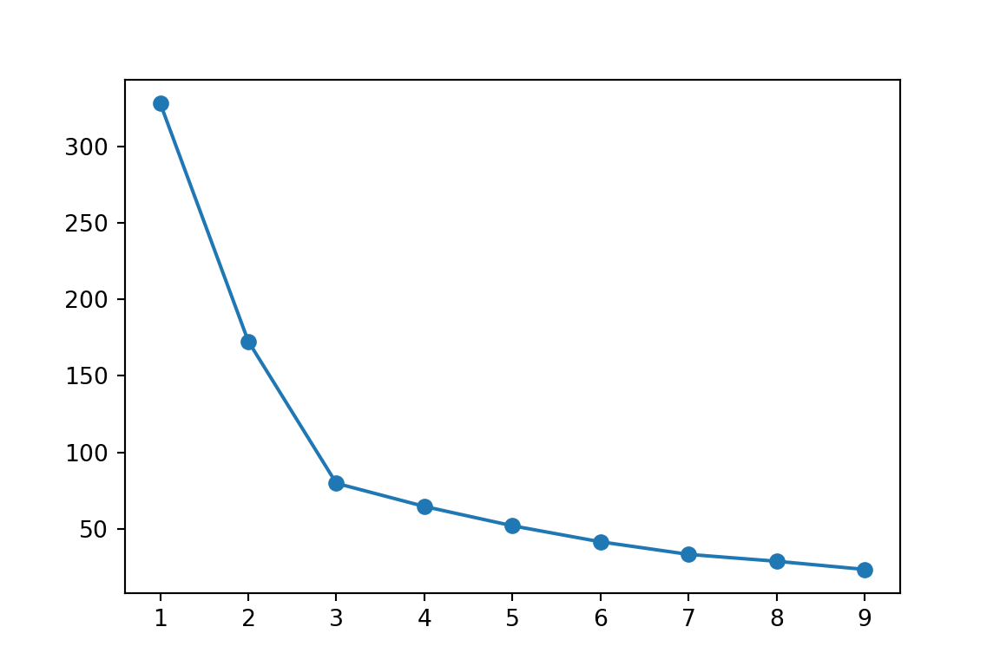

import matplotlib.pyplot as plt
from sklearn.cluster import KMeans
import pandas as pd
shopping_original=pd.read_csv('./data/Shopping_Data.csv')
# Examine data
shopping_original.head()## CaseNo V1 V2 V3 V4 V5 V6
## 0 1 6 4 7 3 2 3
## 1 2 2 3 1 4 5 4
## 2 3 7 2 6 4 1 3
## 3 4 4 6 4 5 3 6
## 4 5 1 3 2 2 6 4shopping_original## CaseNo V1 V2 V3 V4 V5 V6
## 0 1 6 4 7 3 2 3
## 1 2 2 3 1 4 5 4
## 2 3 7 2 6 4 1 3
## 3 4 4 6 4 5 3 6
## 4 5 1 3 2 2 6 4
## 5 6 6 4 6 3 3 4
## 6 7 5 3 6 3 3 4
## 7 8 7 3 7 4 1 4
## 8 9 2 4 3 3 6 3
## 9 10 3 5 3 6 4 6
## 10 11 1 3 2 3 5 3
## 11 12 5 4 5 4 2 4
## 12 13 2 2 1 5 4 4
## 13 14 4 6 4 6 4 7
## 14 15 6 5 4 2 1 4
## 15 16 3 5 4 6 4 7
## 16 17 4 4 7 2 2 5
## 17 18 3 7 2 6 4 3
## 18 19 4 6 3 7 2 7
## 19 20 2 3 2 4 7 2shopping_df = shopping_original.drop(columns="CaseNo")
shopping_df## V1 V2 V3 V4 V5 V6
## 0 6 4 7 3 2 3
## 1 2 3 1 4 5 4
## 2 7 2 6 4 1 3
## 3 4 6 4 5 3 6
## 4 1 3 2 2 6 4
## 5 6 4 6 3 3 4
## 6 5 3 6 3 3 4
## 7 7 3 7 4 1 4
## 8 2 4 3 3 6 3
## 9 3 5 3 6 4 6
## 10 1 3 2 3 5 3
## 11 5 4 5 4 2 4
## 12 2 2 1 5 4 4
## 13 4 6 4 6 4 7
## 14 6 5 4 2 1 4
## 15 3 5 4 6 4 7
## 16 4 4 7 2 2 5
## 17 3 7 2 6 4 3
## 18 4 6 3 7 2 7
## 19 2 3 2 4 7 2cluster_range = range(1, 10)
cluster_errors = []
for num_clusters in cluster_range:
clusters=KMeans(num_clusters)
clusters.fit(shopping_df)
cluster_errors.append(clusters.inertia_)
## KMeans(algorithm='auto', copy_x=True, init='k-means++', max_iter=300,
## n_clusters=1, n_init=10, n_jobs=None, precompute_distances='auto',
## random_state=None, tol=0.0001, verbose=0)
## KMeans(algorithm='auto', copy_x=True, init='k-means++', max_iter=300,
## n_clusters=2, n_init=10, n_jobs=None, precompute_distances='auto',
## random_state=None, tol=0.0001, verbose=0)
## KMeans(algorithm='auto', copy_x=True, init='k-means++', max_iter=300,
## n_clusters=3, n_init=10, n_jobs=None, precompute_distances='auto',
## random_state=None, tol=0.0001, verbose=0)
## KMeans(algorithm='auto', copy_x=True, init='k-means++', max_iter=300,
## n_clusters=4, n_init=10, n_jobs=None, precompute_distances='auto',
## random_state=None, tol=0.0001, verbose=0)
## KMeans(algorithm='auto', copy_x=True, init='k-means++', max_iter=300,
## n_clusters=5, n_init=10, n_jobs=None, precompute_distances='auto',
## random_state=None, tol=0.0001, verbose=0)
## KMeans(algorithm='auto', copy_x=True, init='k-means++', max_iter=300,
## n_clusters=6, n_init=10, n_jobs=None, precompute_distances='auto',
## random_state=None, tol=0.0001, verbose=0)
## KMeans(algorithm='auto', copy_x=True, init='k-means++', max_iter=300,
## n_clusters=7, n_init=10, n_jobs=None, precompute_distances='auto',
## random_state=None, tol=0.0001, verbose=0)
## KMeans(algorithm='auto', copy_x=True, init='k-means++', max_iter=300,
## n_clusters=8, n_init=10, n_jobs=None, precompute_distances='auto',
## random_state=None, tol=0.0001, verbose=0)
## KMeans(algorithm='auto', copy_x=True, init='k-means++', max_iter=300,
## n_clusters=9, n_init=10, n_jobs=None, precompute_distances='auto',
## random_state=None, tol=0.0001, verbose=0)plt.figure(figsize=(6,4))
plt.plot(cluster_range,cluster_errors,marker="o")
plt.show()
k=3
model=KMeans(k).fit(shopping_df)
print(model)## KMeans(algorithm='auto', copy_x=True, init='k-means++', max_iter=300,
## n_clusters=3, n_init=10, n_jobs=None, precompute_distances='auto',
## random_state=None, tol=0.0001, verbose=0)print(model.labels_)## [1 0 1 2 0 1 1 1 0 2 0 1 0 2 1 2 1 2 2 0]centroids=model.cluster_centers_
print(centroids)## [[1.66666667 3. 1.83333333 3.5 5.5 3.33333333]
## [5.75 3.625 6. 3.125 1.875 3.875 ]
## [3.5 5.83333333 3.33333333 6. 3.5 6. ]]shopping_df["clusterid"]=model.labels_
#First Cluster
shopping_df[shopping_df.clusterid==0]
#Second## V1 V2 V3 V4 V5 V6 clusterid
## 1 2 3 1 4 5 4 0
## 4 1 3 2 2 6 4 0
## 8 2 4 3 3 6 3 0
## 10 1 3 2 3 5 3 0
## 12 2 2 1 5 4 4 0
## 19 2 3 2 4 7 2 0shopping_df[shopping_df.clusterid==1]
#Third## V1 V2 V3 V4 V5 V6 clusterid
## 0 6 4 7 3 2 3 1
## 2 7 2 6 4 1 3 1
## 5 6 4 6 3 3 4 1
## 6 5 3 6 3 3 4 1
## 7 7 3 7 4 1 4 1
## 11 5 4 5 4 2 4 1
## 14 6 5 4 2 1 4 1
## 16 4 4 7 2 2 5 1shopping_df[shopping_df.clusterid==2]
## V1 V2 V3 V4 V5 V6 clusterid
## 3 4 6 4 5 3 6 2
## 9 3 5 3 6 4 6 2
## 13 4 6 4 6 4 7 2
## 15 3 5 4 6 4 7 2
## 17 3 7 2 6 4 3 2
## 18 4 6 3 7 2 7 2